?
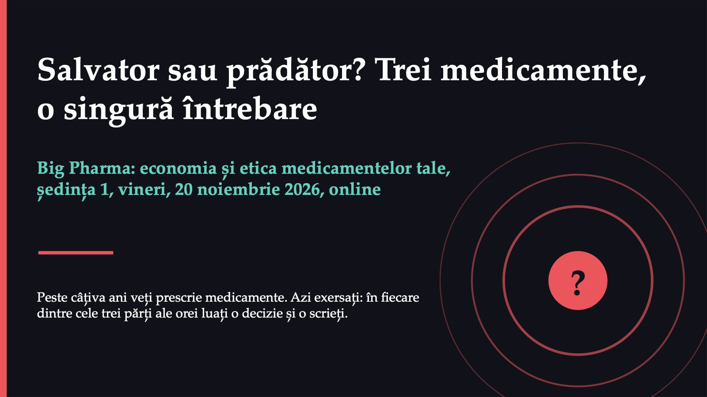
1 / 47Bună seara. Titlul disciplinei e o întrebare: industria medicamentelor ne salvează sau profită de noi? Nu vă cer să alegeți o tabără. Vă cer să judecați trei medicamente reale, cu documentele lor, așa cum le va judeca medicul care veți fi.
?
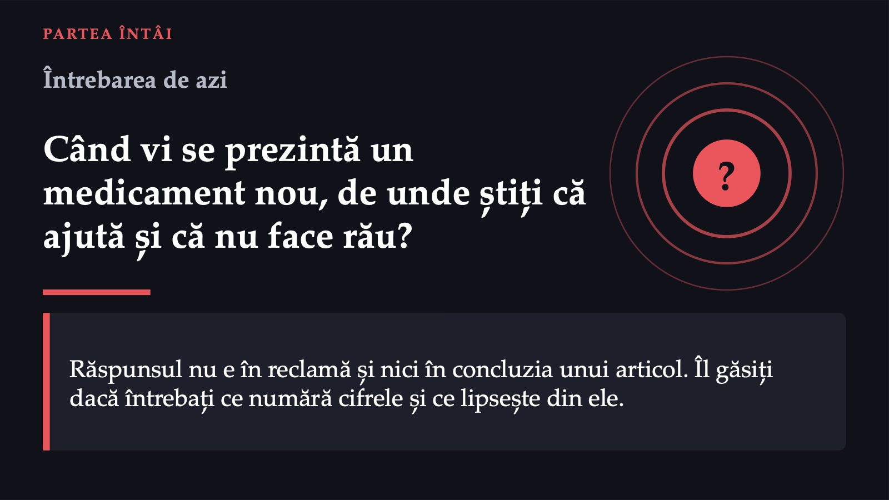
2 / 47La această întrebare ne întoarcem la final. Până atunci o veți pune de trei ori, la trei medicamente.
Un cuvânt, înainte de orice
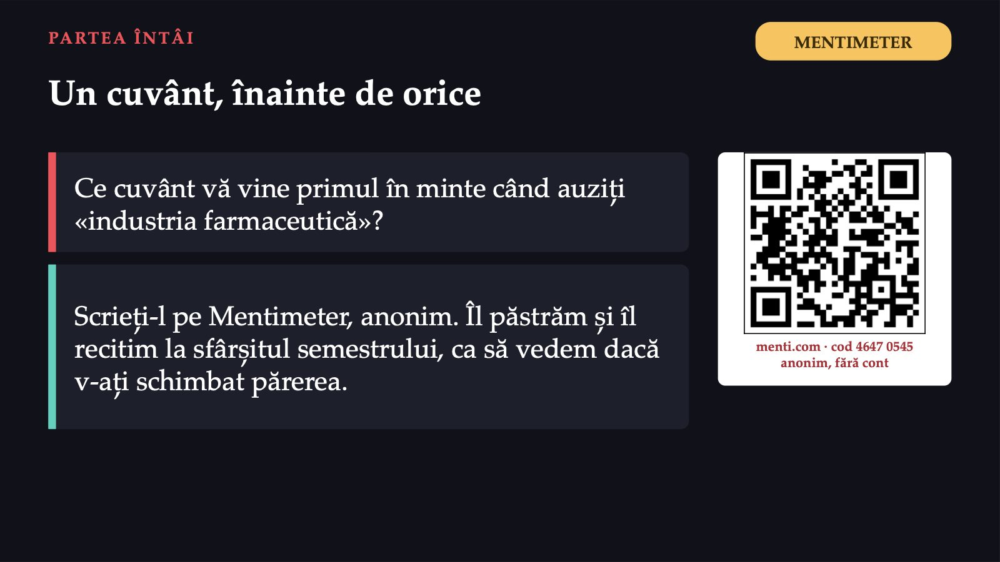
3 / 47Nu există un răspuns bun. Vreau doar să vedem de unde pornim.
Trei medicamente reale, trei decizii
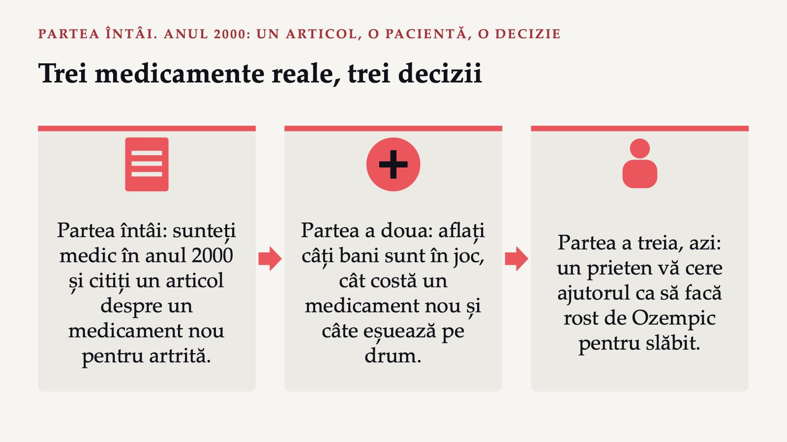
4 / 47Fiecare parte se încheie cu câteva rânduri scrise de voi. Pe unele le citim împreună.
01
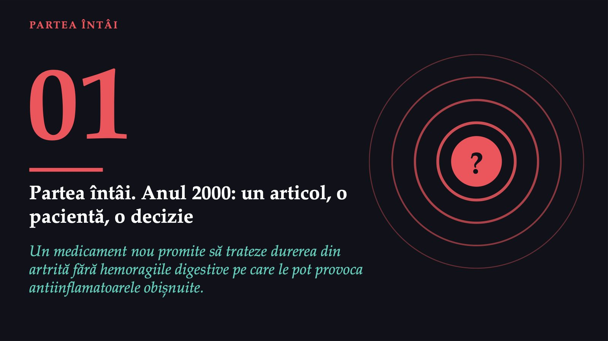
5 / 47Ne întoarcem în anul 2000.
Pacienta din cabinet
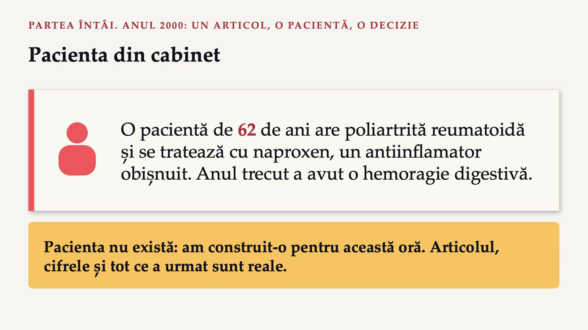
6 / 47Pacienta e inventată, ca să aveți la cine vă gândi. Restul e documentat: articolul, scrisorile revistei, audierea din Senatul american.
2–4 %
![PARTEA ÎNTÂI. ANUL 2000: UN ARTICOL, O PACIENTĂ, O DECIZIE Problema pe care trebuia s-o rezolve medicamentul În fiecare an, 2–4 % dintre pacienții care iau antiinflamatoare obișnuite au un eveniment digestiv superior important: ulcer cu simptome, hemoragie, perforație sau obstrucție. Rofecoxibul, vândut sub numele Vioxx, blochează mai ales a doua dintre cele două enzime pe care le blochează antiinflamatoarele obișnuite. Promisiunea: aceeași putere asupra durerii, cu un stomac mai protejat. Sursa: Bombardier et al., N Engl J Med 2000;343:1520–8, rezumat, Background și Methods.](diapozitive/C01/007.jpg) 7 / 47
7 / 47Din aceeași familie cu naproxenul fac parte ibuprofenul și diclofenacul, pe care probabil le aveți și voi în casă. Problema era reală și este reală și azi.
8 076
![PARTEA ÎNTÂI. ANUL 2000: UN ARTICOL, O PACIENTĂ, O DECIZIE Documentul real: articolul din New England Journal of Medicine, 23 noiembrie 2000 Titlul: «Comparația toxicității digestive superioare a rofecoxibului și a naproxenului la pacienții cu poliartrită reumatoidă» (studiul VIGOR). Concluzia autorilor: rofecoxibul se asociază cu semnificativ mai puține evenimente digestive superioare importante decât naproxenul. Despre inimă, concluzia nu spune nimic. Au participat 8 076 de pacienți, repartizați la întâmplare: rofecoxib 50 mg pe zi sau naproxen 500 mg de două ori pe zi. Urmărirea mediană a fost de 9,0 luni. Sursa: Bombardier C et al. N Engl J Med 2000;343:1520–8, titlul și rezumatul, Methods și Conclusions.](diapozitive/C01/008.jpg) 8 / 47
8 / 47Uitați-vă la titlu și la concluzie: amândouă vorbesc numai despre stomac. Rețineți asta; în două minute vedem ce scria în același articol despre inimă.
Ce spunea articolul despre stomac
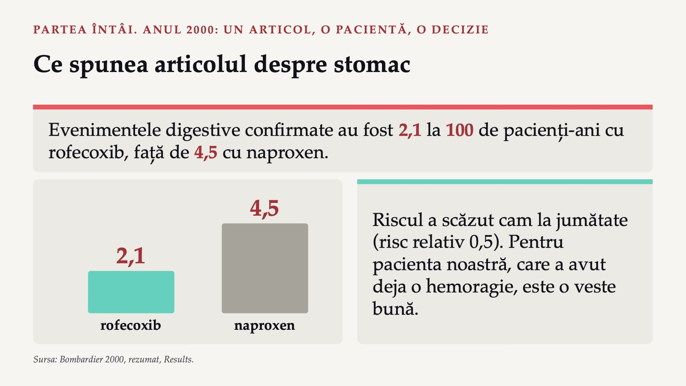
9 / 47Risc relativ 0,5 înseamnă că, la același număr de pacienți, evenimentele au fost cam pe jumătate.
Ce spunea același articol despre inimă
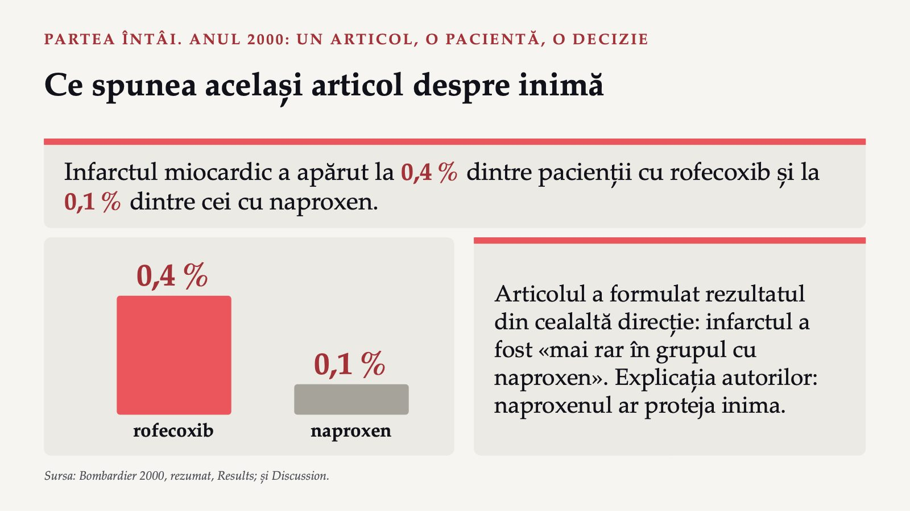
10 / 47Citiți atent formularea. Nu scrie că riscul este mai mare cu rofecoxib, ci că incidența a fost mai mică la naproxen. Aceeași cifră, altă poveste. Și nu uitați: titlul și concluzia vorbesc numai despre stomac.
Decizia voastră
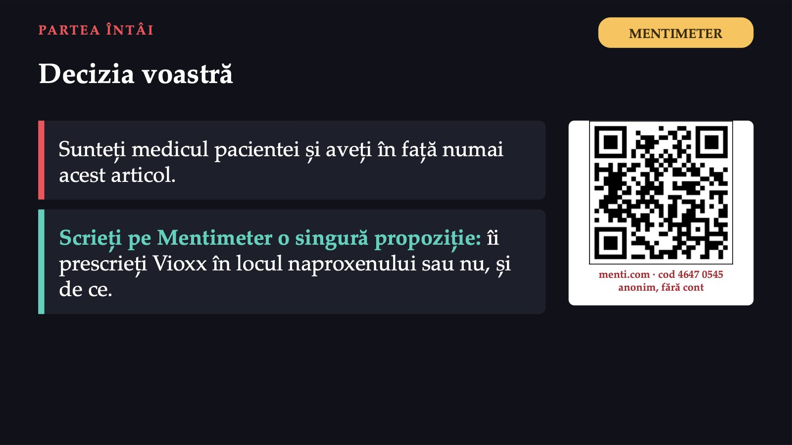
11 / 47Aveți trei minute. Nu e un test. Vreau să văd cum judecați cu informațiile pe care le avea un medic atunci.
Ce ați decis
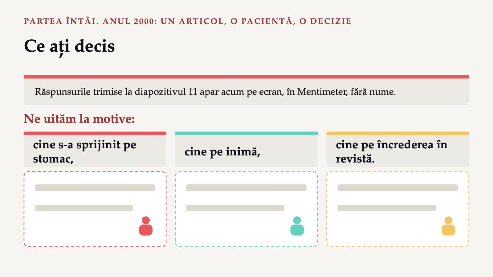
12 / 47Comentăm răspunsurile, nu persoanele: nimeni nu știe cine a scris ce.
Ce nu știa medicul în anul 2000
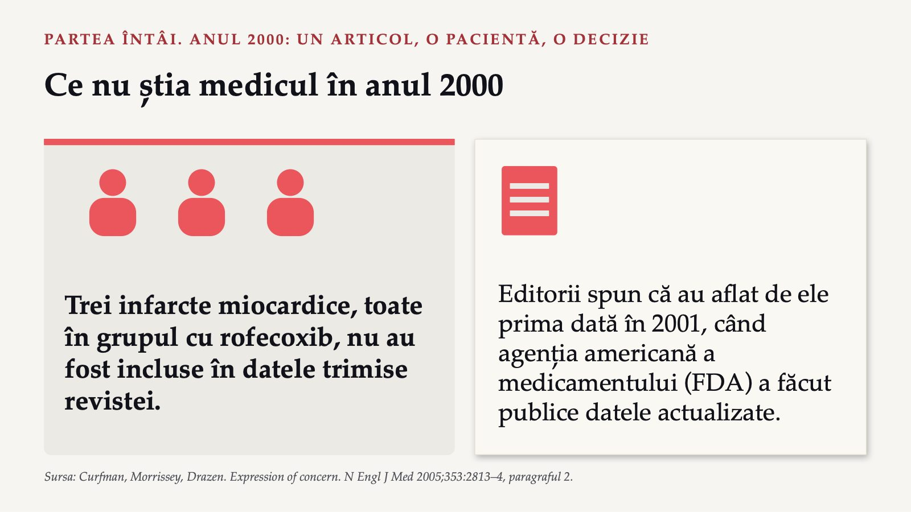
13 / 47Aceasta e informația care v-a lipsit când ați decis. Potrivit editorilor, ea exista înainte ca articolul să apară.
Cronologia
![PARTEA ÎNTÂI Cronologia Sursa: Curfman 2005, paragrafele 3 și 6; Federal Register 87 FR 56061, 2022. Înainte de 18 mai 2000 din manuscris sunt șterse unele date cardiovasculare, cu două zile înainte de prima trimitere la revistă. 5 iulie 2000 un memorandum intern; potrivit editorilor, el arată că cel puțin doi autori știau de cele trei infarcte. 23 noiembrie 2000 articolul apare fără ele. 30 septembrie 2004 firma retrage voluntar Vioxx de pe piața Statelor Unite. 8 decembrie 2005 revista publică un avertisment despre integritatea datelor din articol.](diapozitive/C01/014.jpg) 14 / 47
14 / 47Uitați-vă la distanța dintre memorandumul intern și publicare: patru luni și jumătate. Editorii conchid că, pe cât se pare, era timp suficient pentru a include datele.
«Aceste inexactități și ștergeri pun sub semnul întrebării integritatea datelor despre evenimentele cardiovasculare adverse din acest articol.»
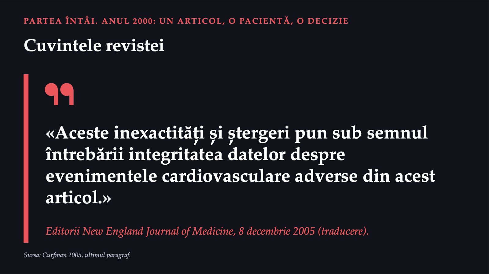
15 / 47Revista nu a retras articolul. A scris însă că integritatea datelor despre inimă este pusă sub semnul întrebării.
Studiul care a oprit medicamentul
![PARTEA ÎNTÂI. ANUL 2000: UN ARTICOL, O PACIENTĂ, O DECIZIE Studiul care a oprit medicamentul APPROVe, proiectat pe trei ani (tratament mediu 2,4 și 2,6 ani), a comparat rofecoxibul cu placebo la 2 586 de pacienți. rofecoxib 1,50 placebo 0,78 Evenimentele trombotice, mai ales infarctele și accidentele vasculare cerebrale ischemice, au fost aproape de două ori mai frecvente cu rofecoxib: 1,50 față de 0,78 la 100 de pacienți-ani. Sursa: Bresalier et al., N Engl J Med 2005;352:1092–102, rezumat, Results.](diapozitive/C01/016.jpg) 16 / 47
16 / 47Aici nu mai exista naproxen în comparație, așa că explicația «naproxenul protejează inima» nu mai putea lămuri singură diferența.
«Această estimare variază între 88 000 și 139 000 de americani. Dintre aceștia, probabil 30–40 % au murit.»
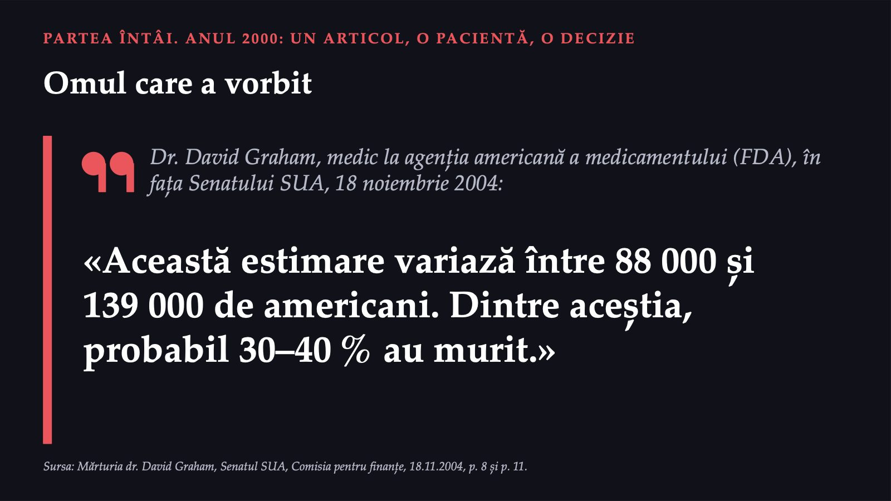
17 / 47Graham lucra chiar în agenția care aprobase medicamentul. În aceeași mărturie a spus că agenția, așa cum funcționa atunci, nu putea proteja America de «un alt Vioxx». Estimarea lui privește cazuri în plus de infarct și de moarte subită, calculate din riscurile din studii; nu sunt decese numărate unul câte unul. Reprezentanta FDA a susținut contrariul în aceeași audiere.
Ce numără cifra
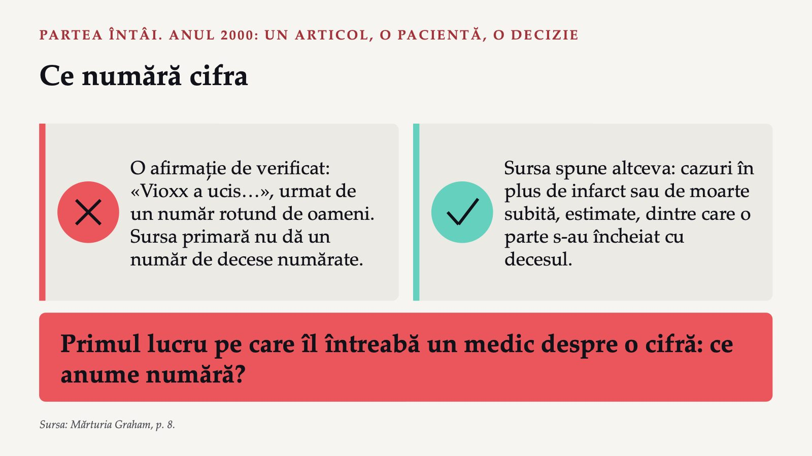
18 / 47Nu micșorăm tragedia; o descriem exact. Cine umflă cifra îi dă celuilalt un motiv să nu mai creadă nimic.
Primul termen nou, raportarea selectivă:
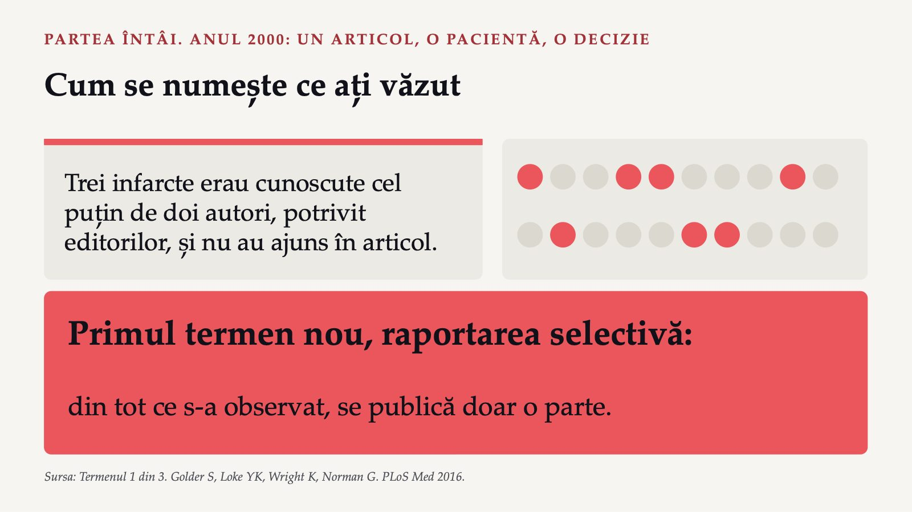
19 / 47L-ați înțeles înainte să-i aflați numele. Îl veți întâlni în fiecare ședință.
Pacienta voastră, în octombrie 2004
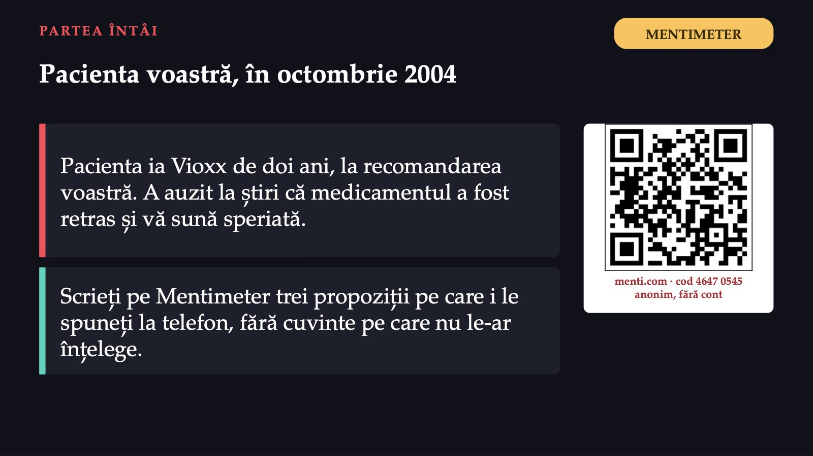
20 / 47Patru minute. Gândiți-vă ce vrea ea să afle: dacă e în pericol, ce face de mâine și de ce i-ați recomandat medicamentul.
Ce i-ați spus pacientei
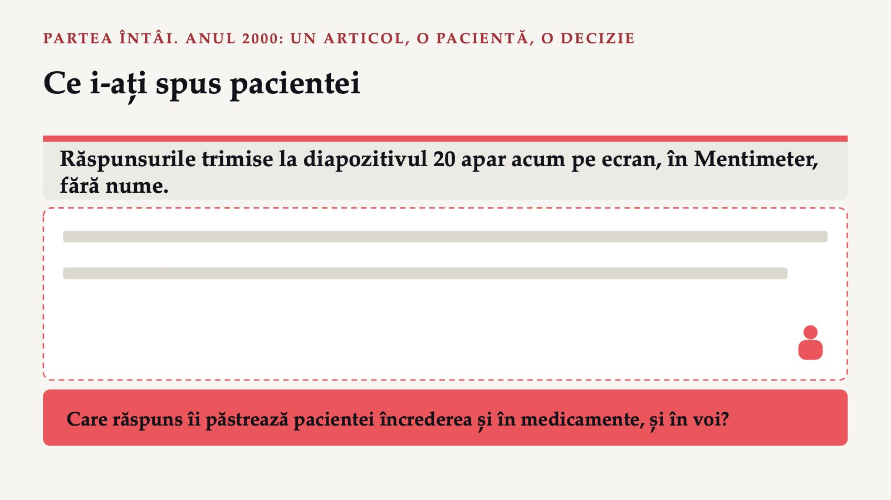
21 / 47Comentăm răspunsurile, nu persoanele: nimeni nu știe cine a scris ce.
Salvator sau prădător, la Vioxx
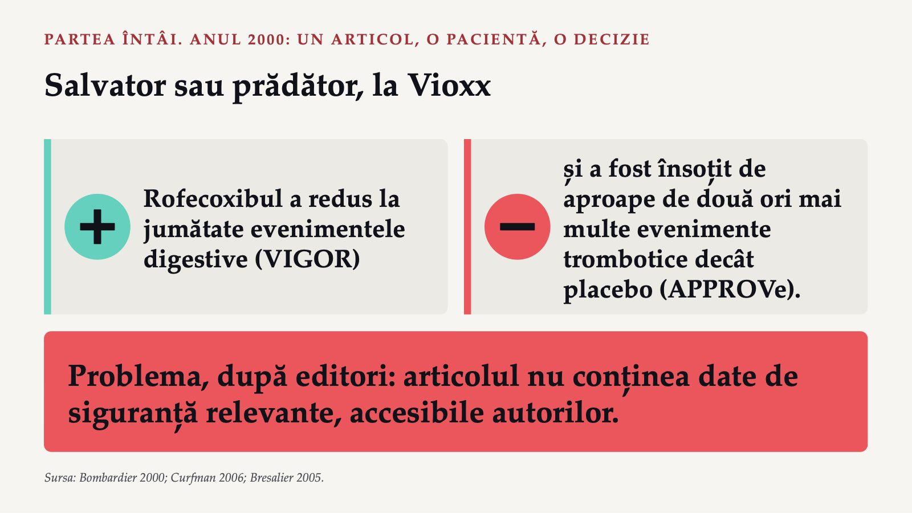
22 / 47Rețineți ideea: aceeași moleculă poate fi și salvator, și prădător, după cât aflăm despre ea. Urmează partea a doua: cât costă un medicament nou, câte eșuează și cât se câștigă.
02
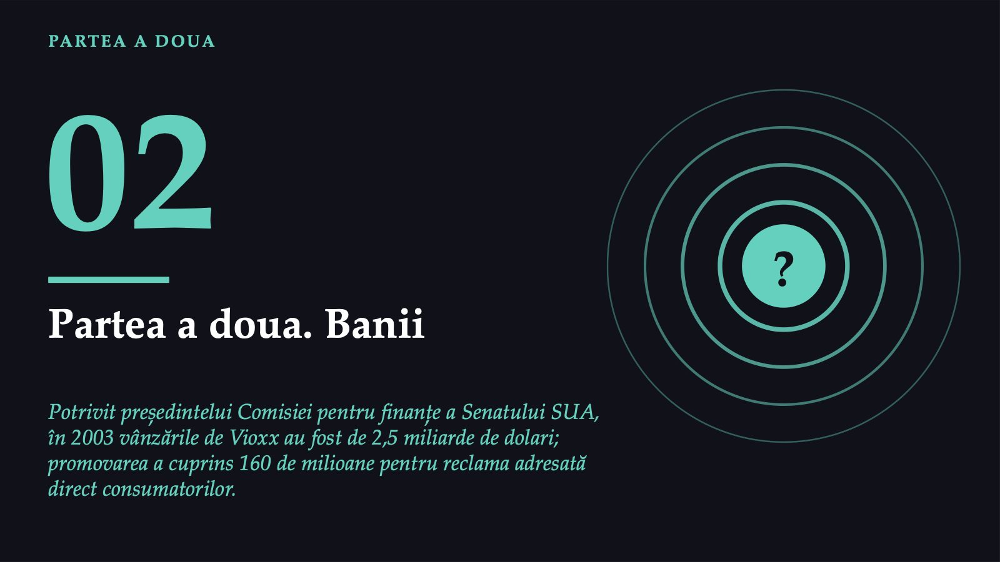
23 / 47Cifrele le-a dat președintele Comisiei pentru finanțe a Senatului american, în 2004. Documentele citite nu leagă lipsa celor trei infarcte de vânzări. Întrebarea părții a doua: banii aceștia sunt răsplata unui risc uriaș sau un profit fără măsură?
Ghiciți întâi
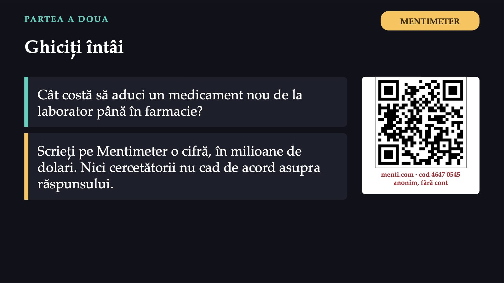
24 / 47Scrieți ce credeți, fără să căutați pe internet. Vedem imediat cât de departe suntem de cifrele publicate.
Patru studii, patru răspunsuri foarte diferite
![PARTEA A DOUA. CE ERA ÎN JOC: CÂT COSTĂ ȘI CÂTE EȘUEAZĂ Patru studii, patru răspunsuri foarte diferite 648 de milioane de dolari: mediana pentru 10 medicamente împotriva cancerului (Prasad și Mailankody, 2017). 1 142 de milioane de dolari: mediana pentru 63 de medicamente noi aprobate în SUA în 2009–2018 (Wouters și colab., 2020, corectat în 2022). 2 558 de milioane de dolari: estimarea din datele confidențiale a 10 firme (DiMasi și colab., 2016). O analiză a 45 de estimări publicate găsește valori între 161 de milioane și 4,54 miliarde de dolari (Schlander și colab., 2021). Sursa: Prasad V, Mailankody S. JAMA Intern Med 2017;177:1569–1575; Wouters OJ, McKee M, Luyten J. JAMA 2020;323:844–853; DiMasi JA, Grabowski HG, Hansen RW. J Health Econ 2016;47:20–33; Schlander M et al. PharmacoEconomics 2021;39:1243–1269.](diapozitive/C01/025.jpg) 25 / 47
25 / 47Între 648 și 2 558 de milioane, raportul este de aproape patru; la Schlander, de aproximativ 28 de ori. Cifre atât de diferite pot ieși fără nicio greșeală: fiecare a numărat altceva. Comparați cu ce ați scris voi pe Mentimeter.
De ce diferă cifrele
![PARTEA A DOUA. CE ERA ÎN JOC: CÂT COSTĂ ȘI CÂTE EȘUEAZĂ De ce diferă cifrele Unii cercetători numără numai banii cheltuiți pe medicamentul care a reușit. Alții adaugă și banii pierduți pe medicamentele care au eșuat pe drum. Unii mai adaugă ce ar fi câștigat banii dacă, în loc să stea ani de zile în cercetare, ar fi fost investiți altundeva (10,5 % pe an la Wouters și la DiMasi). Același studiu (Wouters, 2020, corectat în 2022) dă trei cifre: 319 milioane fără eșecuri, 770 de milioane cu eșecuri și 1 142 de milioane cu eșecuri și cu acest cost al banilor. Sursa: Prasad V, Mailankody S. JAMA Intern Med 2017;177:1569–1575; Wouters OJ, McKee M, Luyten J. JAMA 2020;323:844–853; DiMasi JA, Grabowski HG, Hansen RW. J Health Econ 2016;47:20–33; Schlander M et al. PharmacoEconomics 2021;39:1243–1269.](diapozitive/C01/026.jpg) 26 / 47
26 / 47Când o firmă vă spune «un medicament costă 2,6 miliarde», aveți de acum întrebarea potrivită: ce ați pus în această sumă?
Din 100 de programe de dezvoltare începute pe oameni, câte ajung la aprobare?
![PARTEA A DOUA. CE ERA ÎN JOC: CÂT COSTĂ ȘI CÂTE EȘUEAZĂ Din 100 de programe de dezvoltare începute pe oameni, câte ajung la aprobare? Din 100 de programe de dezvoltare care încep testarea pe oameni (faza 1), aproximativ 14 ajung la aprobare (13,8 %, în 2000–2015). La cancer, aproximativ 3 din 100 (3,4 %). La vaccinurile împotriva bolilor infecțioase, aproximativ 33 din 100 (33,4 %). Sursa: Wong CH, Siah KW, Lo AW. Biostatistics 2019;20:273–286, cu corrigendum; corrigendumul privește numai coloanele fazelor 2→3 și 3→aprobare, nu probabilitatea de la faza 1 la aprobare, iar tabelele online sunt corectate.](diapozitive/C01/027.jpg) 27 / 47
27 / 47Acesta e argumentul firmelor despre risc, și e adevărat: cele mai multe programe nu ajung la aprobare. Cifra numără însă programe de dezvoltare, nu medicamente: același medicament, încercat pentru trei boli, face trei programe.
Numitorul: din câți?
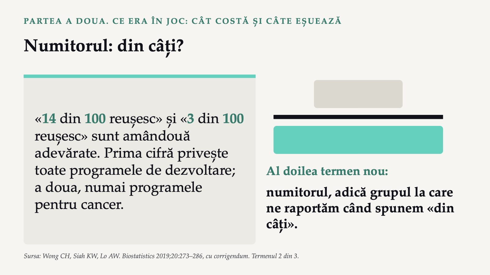
28 / 47Ori de câte ori vedeți un procent, la știri, într-o reclamă sau într-un articol, întrebați: din câți?
Și cât câștigă firmele
![PARTEA A DOUA. CE ERA ÎN JOC: CÂT COSTĂ ȘI CÂTE EȘUEAZĂ Și cât câștigă firmele Cele 10 medicamente împotriva cancerului din studiul Prasad și Mailankody au costat împreună 7,2 miliarde de dolari pentru cercetare și dezvoltare. În aproximativ patru ani de la aprobare (mediana), ele au adus venituri de 67 de miliarde (la cinci, și prețul de achiziție), de peste nouă ori mai mult. Riscul este real. Pentru medicamentele care reușesc, și câștigul este foarte mare. Sursa: Prasad V, Mailankody S. JAMA Intern Med 2017;177:1569–1575, rezumat, Results.](diapozitive/C01/029.jpg) 29 / 47
29 / 47Chiar dacă adăugăm costul banilor blocați, 9,1 miliarde, veniturile rămân de peste șapte ori mai mari. Dar întrebați-vă și aici, ca la orice cifră: ce firme lipsesc din acest calcul?
Întrebarea voastră pentru firmă
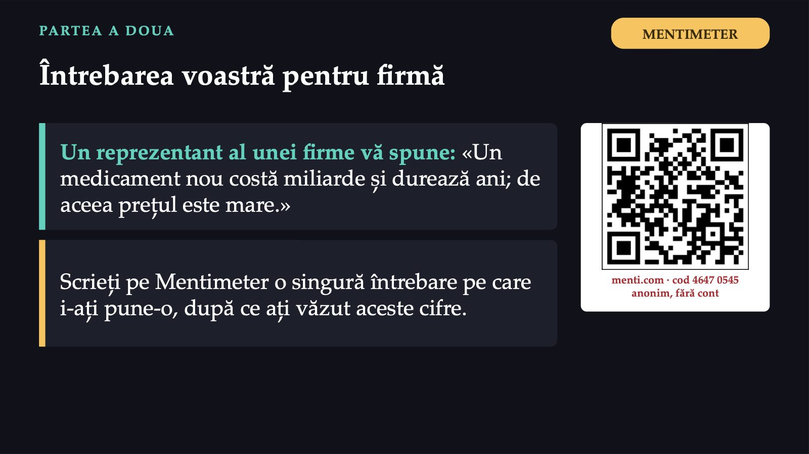
30 / 47Trei minute. Peste câțiva ani, reprezentanții firmelor vor intra în cabinetul vostru. O întrebare bună este una la care nu se poate răspunde cu o reclamă.
Întrebările voastre pentru firmă
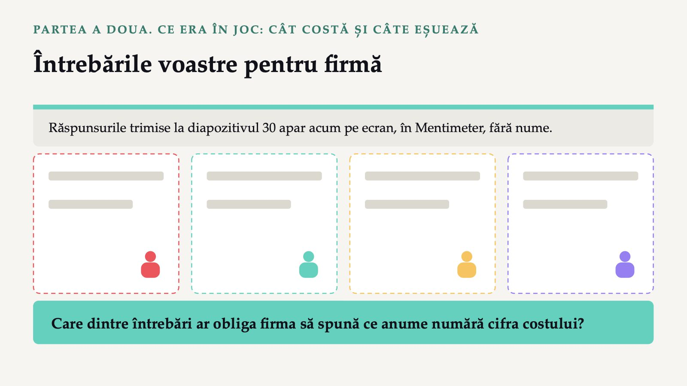
31 / 47Comentăm răspunsurile, nu persoanele: nimeni nu știe cine a scris ce.
03
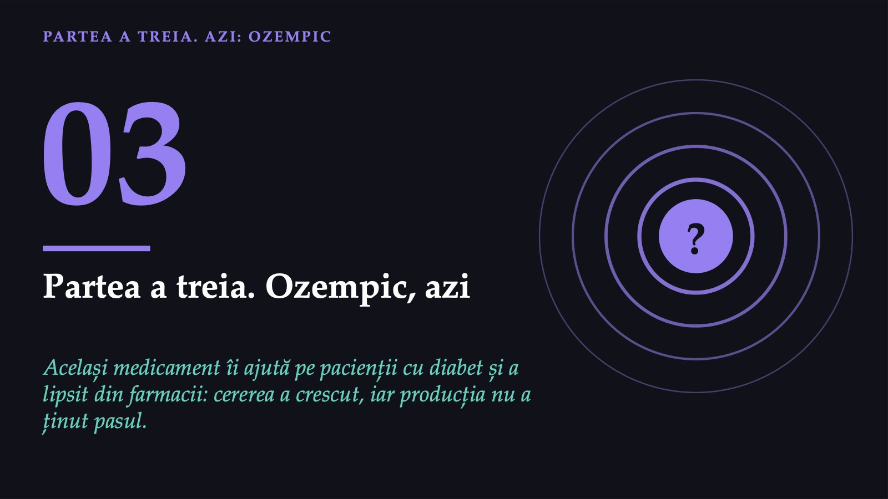
32 / 47Trecem în prezent. Probabil știți și voi pe cineva care a luat Ozempic sau a întrebat de el.
«Am multiple cunoștințe care utilizează Ozempic off label pentru scădere ponderală; problema este lanțul de aprovizionare și prețul.»
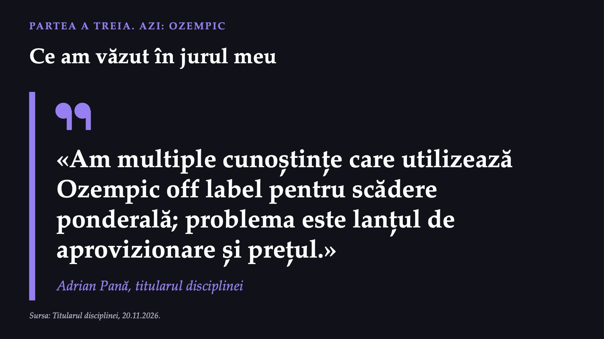
33 / 47Nu adăugăm nimic despre aceste persoane: nu le cunoaștem decizia medicală și nu este a noastră de judecat.
Ce este Ozempic
![PARTEA A TREIA. AZI: OZEMPIC Ce este Ozempic Ozempic conține semaglutidă și este autorizat pentru adulții cu diabet zaharat de tip 2 care nu este bine controlat. Aceeași substanță, în altă doză, se vinde ca Wegovy, autorizat, în anumite condiții, pentru scăderea în greutate. A folosi un medicament «în afara indicației» (în engleză, off-label) înseamnă a-l prescrie pentru altceva decât boala, doza sau pacienții pentru care a fost autorizat. Sursa: EMA, EPAR Ozempic și EPAR Wegovy; ANMDMR, comunicarea directă din februarie 2023.](diapozitive/C01/034.jpg) 34 / 47
34 / 47«În afara indicației» nu înseamnă interzis. Înseamnă că decizia îi aparține medicului, iar autorizația nu o acoperă.
Ce știm sigur despre beneficiu
![PARTEA A TREIA. AZI: OZEMPIC Ce știm sigur despre beneficiu Studiul SELECT a urmărit, în medie 39,8 luni, 17 604 adulți cu boală cardiovasculară, supraponderali sau cu obezitate, fără diabet. Jumătate au primit semaglutidă 2,4 mg pe săptămână (doza din Wegovy), jumătate placebo. 6,5 % semaglutidă 8,0 % placebo Infarctul nefatal, accidentul vascular cerebral nefatal sau decesul de cauză cardiovasculară au apărut la 6,5 % dintre cei cu semaglutidă și la 8,0 % dintre cei cu placebo. Studiul a fost plătit de producător. După Vioxx, știm ce întrebăm: ce numără cifra și ce lipsește din ea? Sursa: Lincoff AM et al. N Engl J Med 2023;389:2221–2232, rezumat: finanțarea de către producător și întreruperile din cauza evenimentelor adverse, 16,6 % față de 8,2 %.](diapozitive/C01/035.jpg) 35 / 47
35 / 47Aici rezultatul e bun, într-un studiu mare. Lecția de la Vioxx nu e «nu credeți nimic», ci «citiți tot». De exemplu: din cauza evenimentelor adverse, 16,6 % dintre cei cu semaglutidă au oprit definitiv tratamentul, față de 8,2 % dintre cei cu placebo.
?
![PARTEA A TREIA. AZI: OZEMPIC Lanțul de aprovizionare Din 2022, în Uniunea Europeană a existat un deficit de Ozempic; în România l-a anunțat scrisoarea din februarie 2023. Cauzele: cererea crescută și, printre altele, limitele producției. Pagina EMA (13 ianuarie 2026) declară deficitul rezolvat. ? Agenția Europeană a Medicamentului (EMA) a scris în 2024 că folosirea pentru slăbit din motive estetice a agravat lipsa. În octombrie 2023 s-a identificat Ozempic falsificat în lanțul de aprovizionare. Pacientul cu diabet care nu își găsește doza riscă să piardă controlul glicemiei. Sursa: Novo Nordisk Farma, de comun acord cu EMA și ANMDMR, Comunicare directă către profesioniștii din domeniul sănătății, Ozempic, februarie 2023; EMA/143883/2024, Recomandările MSSG, 12.06.2024, traducerea ANMDMR, secțiunile 1 și 2.3; EMA, pagina deficitului de Ozempic, 13.01.2026.](diapozitive/C01/036.jpg) 36 / 47
36 / 47Asta spune și citatul de la începutul părții: problema e lanțul de aprovizionare. Când un medicament devine modă, bolnavul cu diabet poate rămâne fără el.
Cât costă o lună de Ozempic
![PARTEA A TREIA. AZI: OZEMPIC Cât costă o lună de Ozempic În audierea din Senatul SUA din 24 septembrie 2024, președintele comisiei de sănătate a arătat, într-un grafic, aceste prețuri pe lună: SUA 969 de dolari (suma cerută, înaintea reducerilor), Canada 155, Danemarca 122, Franța 71, Germania 59. SUA 969 Canada 155 Danemarca 122 Franța 71 Germania 59 Un studiu din 2024 estimează, din costul de producție și o marjă de profit, un preț de 0,89–4,73 dolari pe lună (0,77 mg pe săptămână). Raportul 969/59 este 16,4 (calcul); în audiere, peste 15. Sursa: Senatul SUA, Comisia HELP, audierea din 24.09.2024, S. Hrg. 118-473; Barber MJ et al. JAMA Netw Open 2024;7:e243474, tabelul 1, dolari 2023.](diapozitive/C01/037.jpg) 37 / 47
37 / 47Cifrele vin dintr-o audiere politică, din graficul președintelui comisiei. Directorul general al firmei a răspuns în aceeași audiere că «nu sunt date comparabile», iar președintele însuși a recunoscut că producția nu este singura cheltuială a unei firme. Rețineți răspunsul firmei: ne întoarcem imediat la el.
71 %
![PARTEA A TREIA. AZI: OZEMPIC Prețul de listă și prețul plătit Prețul de listă este cel afișat de producător. Prețul plătit este ce rămâne după reducerile negociate de intermediari, de asigurători și de stat. Pentru 2027, programul public american Medicare a negociat 274 de dolari pe 30 de zile pentru Ozempic, Rybelsus și Wegovy, față de un preț de listă de 959 de dolari în 2024: 959 274 prețul de listă prețul plătit cu 71 % mai puțin. Al treilea termen nou: prețul de listă nu este prețul plătit. Sursa: CMS, fișa prețurilor negociate pentru 2027, p. 2; audierea HELP 24.09.2024. Termenul 3 din 3.](diapozitive/C01/038.jpg) 38 / 47
38 / 47Ați văzut 969 mai devreme și acum 959: sunt două surse, iar audierea nu spune cum a socotit luna, așa că nu le amestecăm. Chiar în audiere s-a spus că prețul net era «aproape 600 de dolari», nu 969. Cine compară un preț de listă cu un preț plătit compară lucruri diferite. Firma a răspuns că «nu sunt date comparabile».
Decizia voastră, azi
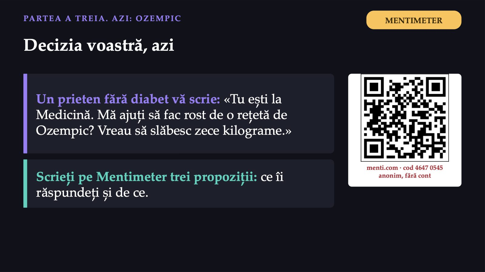
39 / 47Patru minute. Situația aceasta vă va găsi cu mult înainte de licență. Gândiți-vă la prietenul vostru, la pacientul cu diabet care caută același medicament în farmacie și la ce spune autorizația europeană: Ozempic este pentru adulți cu diabet zaharat de tip 2.
Ce i-ați răspuns prietenului
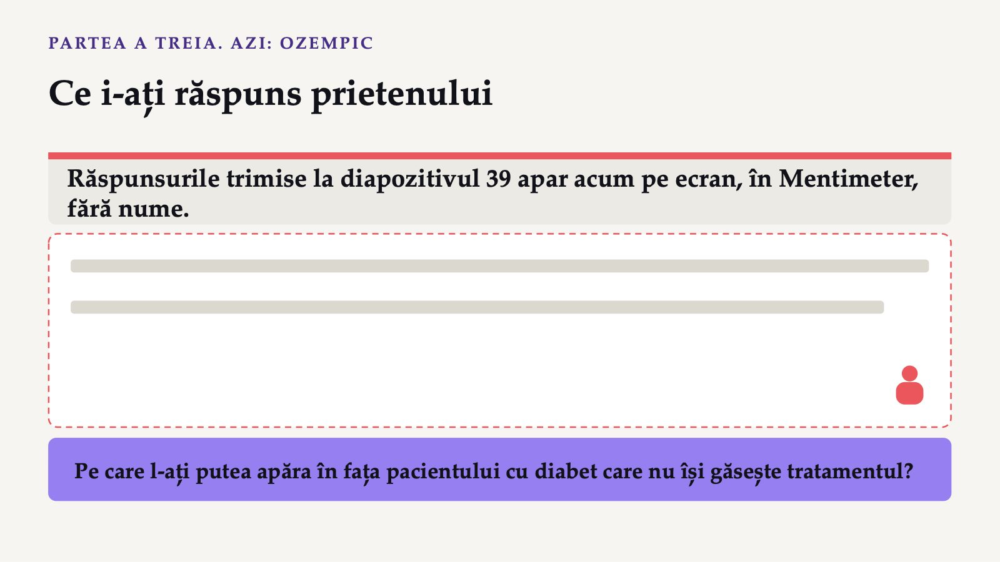
40 / 47Comentăm răspunsurile, nu persoanele: nimeni nu știe cine a scris ce.
Salvator sau prădător, la Ozempic
![PARTEA A TREIA. AZI: OZEMPIC Salvator sau prădător, la Ozempic Salvator: beneficiul a fost arătat la pacienții cu diabet de tip 2 și la cei cu boală cardiovasculară, supraponderali sau cu obezitate, fără diabet (în doza din Wegovy). Prădător? Prețurile pe lună arătate într-o audiere: 969 de dolari în SUA (suma cerută, înaintea reducerilor) și 59 în Germania. Organizația Mondială a Sănătății proiectează că, până în 2030, aceste medicamente vor ajunge la mai puțin de 10 % dintre cei care ar putea beneficia de ele. Sursa: Lincoff 2023; EMA, EPAR Ozempic; Senatul SUA, Comisia HELP, audierea din 24.09.2024; OMS, comunicatul din 1.12.2025.](diapozitive/C01/041.jpg) 41 / 47
41 / 47Vioxx ne-a arătat ce poate lipsi din dovezi. Ozempic ne arată ce poate lipsi din acces. Restul semestrului merge pe aceste două drumuri.
Ce numără, de fapt, cifra?
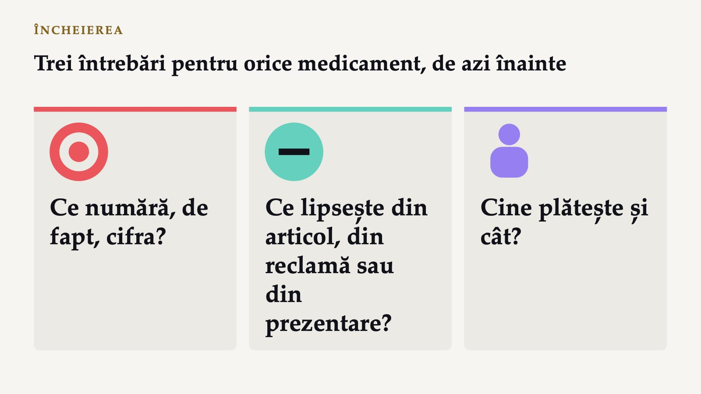
42 / 47Le puteți pune de mâine: la cutia de ibuprofen din sertar, care e din aceeași familie cu naproxenul, la reclama de la televizor, la prietenul care vă cere Ozempic.
Kahoot
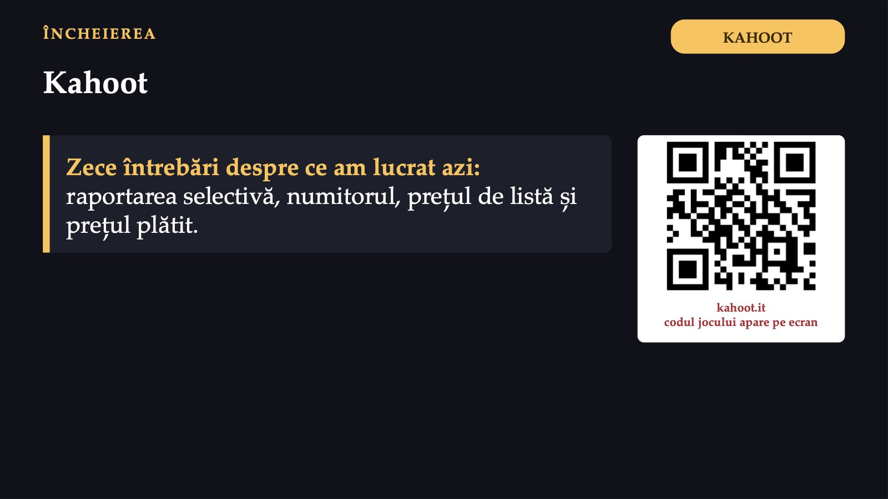
43 / 47Contează să înțelegeți, nu să fiți primii.
Cum se încheie disciplina
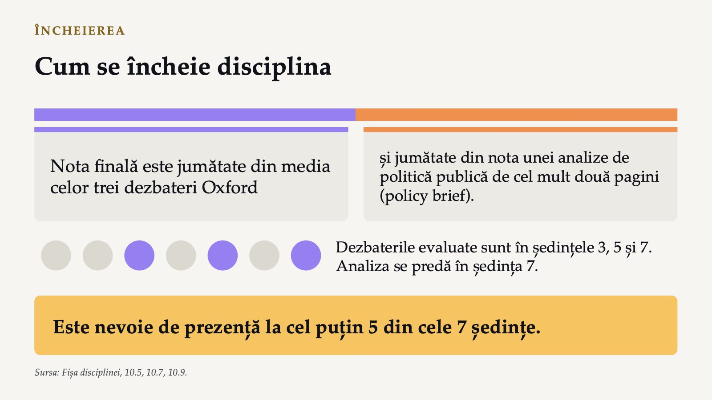
44 / 47Detaliile, grila și termenele sunt pe pagina disciplinei. La ședința 3 aveți prima dezbatere.
Ședința următoare
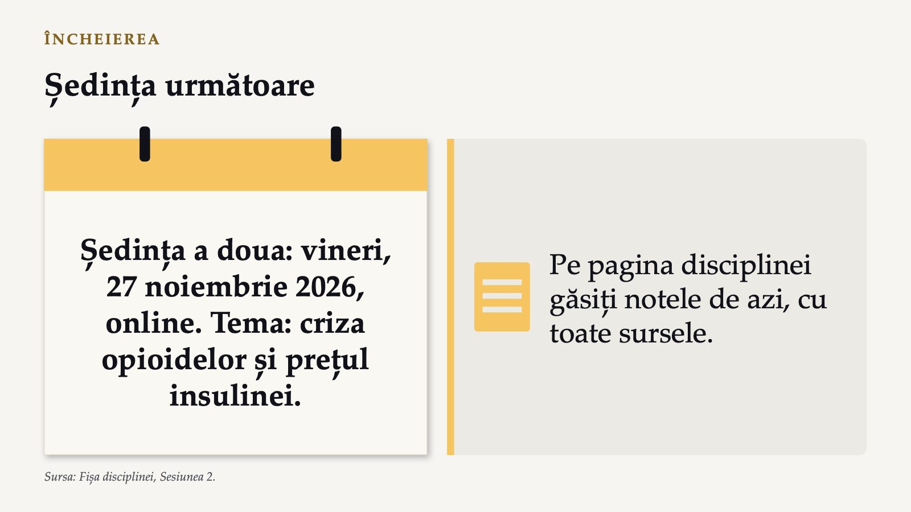
45 / 47Ne vedem vineri, 27 noiembrie, online.
Trei întrebări despre ora de azi
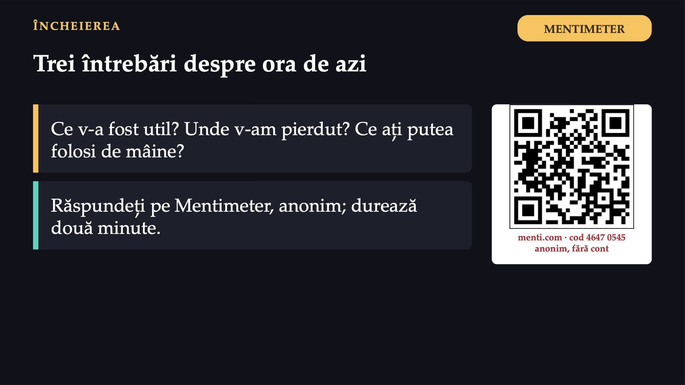
46 / 47Răspunsurile voastre schimbă ședința următoare. Spuneți-ne sincer.
De unde știți că un medicament ajută și nu face rău?
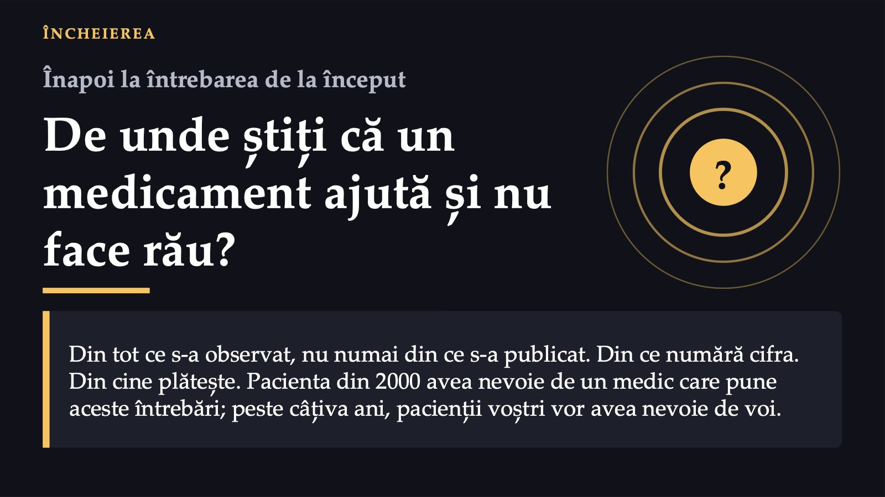
47 / 47Vă mulțumesc. Ne vedem la ședința a doua.
Săgeți sau spațiu: navigare · O: vedere de ansamblu · N: notele prezentatorului · F: ecran complet · Esc: închidere